Culture Indian:Indian Jewelry
Indian Jewelry
India and jewelry, jewelry and Indian women - the terms are linked inherently. At the time of wedding as well as numerous other occasions, a woman is gifted jewelry by her parents and relatives. Although the gift is meant to give her security in contingency, ornamentation is an obvious purpose. All the cities across the length and width of India have shops of jewelers - some traditional and some modern jewelers, catering to the need of all kinds. Not that the affluent class people wear ornaments, there are low cost jewelry items in ample, which cater the demand of low income group as well.India houses various kinds of jewelry arts, ranging from Meenakari and Kundan to stone and bead work. The craft of cutting and polishing precious and semi-precious stones and giving them glamorous face is something artistic. Emeralds, rubies, garnets, amethysts, corals, sapphires, and turquoises are among the stones which are used for the enhancement of gold and silver jewelry. Gold jewelry is the most popular among South Indian women. In southern part of India, gold is considered auspicious and a status symbol. Talking about the art on gold jewelry, Kundan is something that comes into our mind.It is a Mughal-inspired art of setting precious stones like diamonds, rubies, and emeralds in gold and silver jewelry. In Meenakari, enameling is done to protect gold and floral pattern coloured in red, blue and green attracts the attention. Silver jewelry is not far behind in popularity, particularly because of its affordability, making it popular among low income group people. Jhumka, hansli, chokar, nath and bracelets made of silver are quite popular among women in India. In short, the range of jewelry in India is wide as well as varied. Be it gold, silver of diamond, you will find everything in the country.
Antique Jewelry
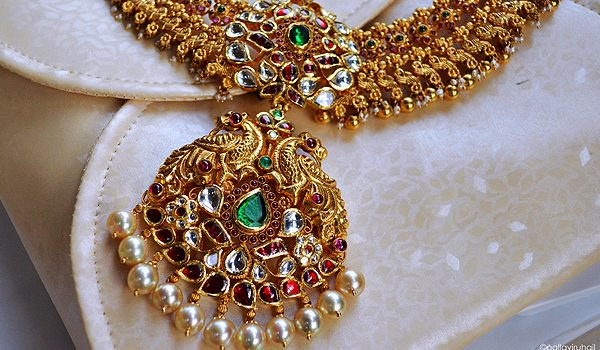The jewelry which is not in mainstream production and of which the mode of production is no longer popular is known by the name of 'Antique Jewelry.' This kind of jewelry has dull and rough look, combined with an old world-world charm, and this serves as the major USP of such jewelry.
Bead Jewelry
Bead art in India is five thousand year old and dates back to the time of Indus Valley Civilization. People of that civilization used to make beads out of gold, silver, copper, clay, ivory and even wood. The excavated carried out there came out with finished and unfinished beads from the site.
Bridal Jewelry
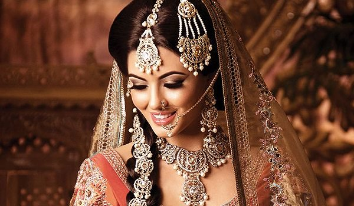India has great tradition of wedding jewelry. Made of superior metals and excellent quality, jewelry accentuates the beauty of bride in multiples. Though these days silver and platinum jewelry is gaining popularity, gold jewelry still holds the most popularity among Indians.
Custom Jewelry

Custom jewelry is personalized jewelry, which a customer gets her made on her interest and fancy. This happens particularly in cases where readymade jewelry does not match the taste of person. Custom jewelry gives total freedom to customer about the specifics.
Fashion Jewelry
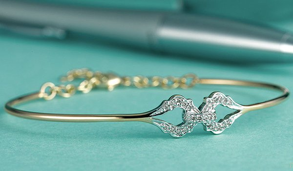Fashion jewelry is also called costume jewelry, mainly for the reason that it is not made of precious metals and stones, rather lighter and cheaper material are used. Fashion jewelry is trend-conscious and keeps on changing as per changing needs.
Filigree Jewelry
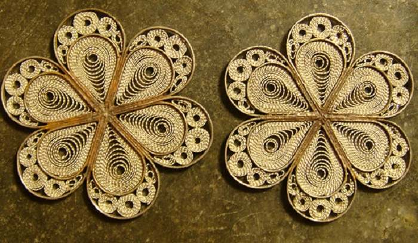Filigree work is done on silver and involves lots of precision and technicality, added with great amount of patience and an eye for minute details. Historically, filigree work was quite popular in countries like Egypt, Italy, and Spain. India's history of filigree work goes back to early centuries.
Gold Jewelry
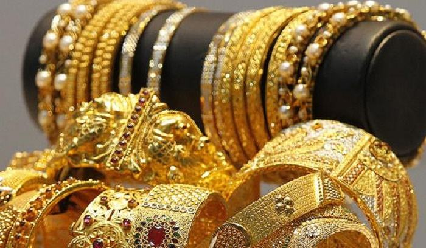Gold is a metal that lures many. It gives the security against any financial crisis, because of its easy liquidity, and is also used by women for adorning themselves. Traditionally, gold has been considered auspicious among Hindus and is regarded to be symbolic of Lakshmi, the Goddess of Wealth.
Handmade jewelry
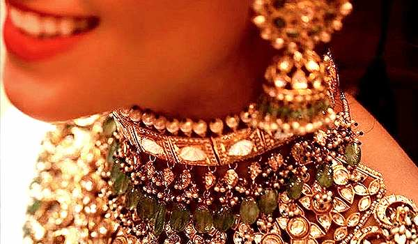Talking about jewelry manufacturing in India is as good as talking about handmade jewelry in India. A major chunk of jewelry in the country is made by independent craftsmen. Traditionally also, a significant part of jewelry manufacturing has been handmade jewelry.
Ivory Jewelry
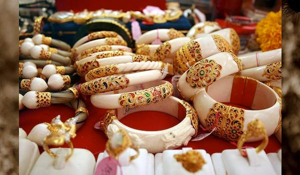Jewelry that is made from the tusk of an elephant is called ivory jewelry. Importance of ivory jewelry can be guessed from the fact that in Gujarat, the bride receives an ivory bangle from her family just before marriage as jewelry. During marriage ceremony wearing of ivory bangles is must for bride.
Jadau Jewelry
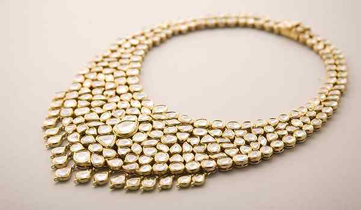Jadau Jewelry forms one of the major examples of high skilled craftsmanship that was brought into India by Mughals. Historically speaking, the tradition of Jadau work has been in practice in the states of Rajasthan and Gujarat since the Mughal era. Jadau jewellery is also called engraved jewelry.
Kundan Jewelry
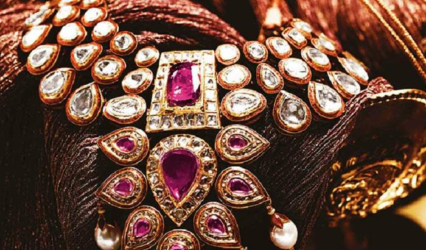During Mughal period, the art of kundan work reached Rajasthan from Delhi. Later on, craftsmen from the different part of the country migrated to the place and made Rajasthan a hub of Kundankari. Rulers and feudal lords gave patronage to the art and it developed into perfection.
Lac Jewelry
Lac jewelry, also known as lacquer jewelry, originated in Rajasthan and has gained considerable popularity in India today. Lac jewelry is available in versatile designs, which add to its beauty. Among the various items in lac jewelry, the bangles need a special mention.
Meenakari Jewelry
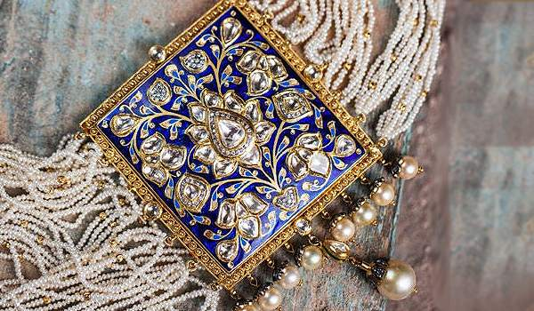In Meenakari jewelry, precious stones are set and then enameled with gold. Historically speaking, the art was introduced to Rajasthan artisans by Raja Mansingh of Amer. He invited Lahore-based skilled artisans to his kingdom, and their intermingling with the locals craftsmen resulted in an amalgam.
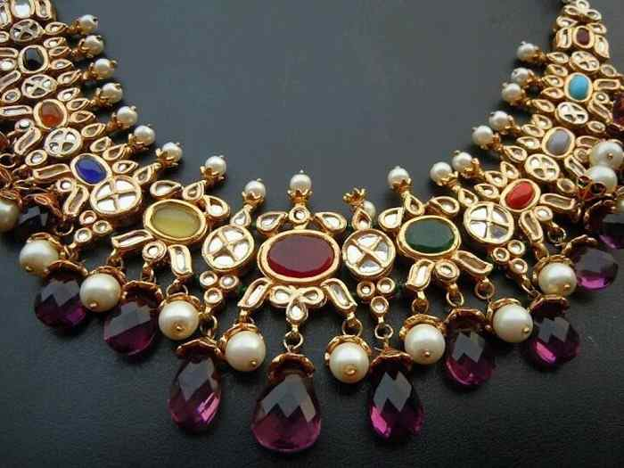In Navratna jewelry, nine auspicious stones are used in a single ornament. The belief behind this is that the nine stones together ensure well being of the person who wears it. In India, Navratna jewelry has been given major importance, because of its astrological significance as well as its innate charm.
Pachchikam Jewelry
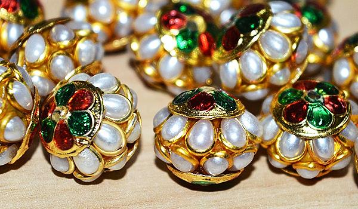In the world of fashion and design, old trends tend to come over again and again, though with slight changes. Pachchikam jewelry making craft is one of the examples of jewelry that has come back once again. Originated in Gujarat and Kutch, centuries ago, Pachchikam jewelry has again become popular.
Silver Jewelry
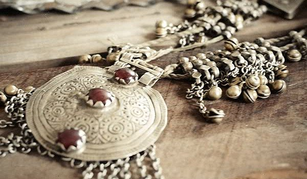Silver Jewelry, along with gold jewelry, is quite popular amongst Indian women. Ornaments made of silver, such as rings, bracelets, chains, necklaces, nose rings, earrings, toe rings, heavy kadas, and armlets, form integral part of Indian jewelry.
Stone Jewelry
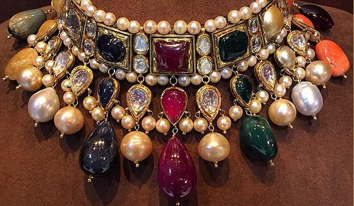Jewelry studded with different gems is quite popular among Indians. For reasons ranging from spiritual to aesthetic to health, gemstone jewelry has become the part of life of Indian women and men both. These stone jewelries are worn according to the individual's astrological chart and ruling of planet.
Temple Jewelry
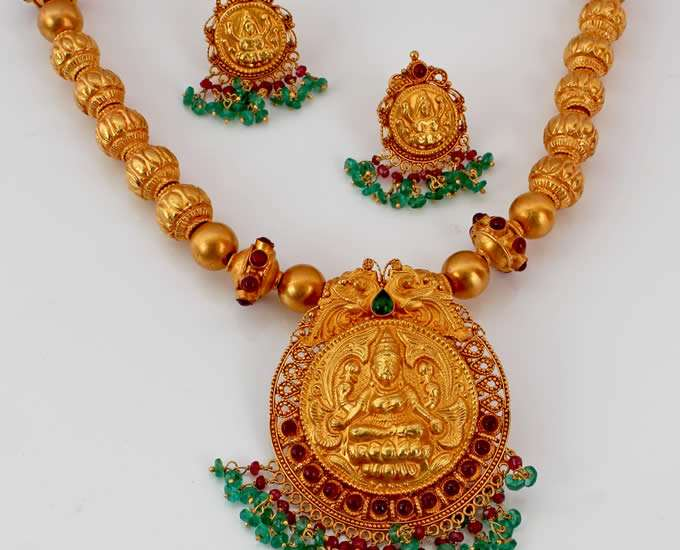Indian jewelry art is at times divided into three kinds - temple jewelry, spiritual jewelry and bridal jewelry. Temple jewelry of India initially used to be described as the jewelry used to adorn the idols of Gods and Goddesses. The statues In India were ornamented with chunky necklaces.
Tribal Jewelry
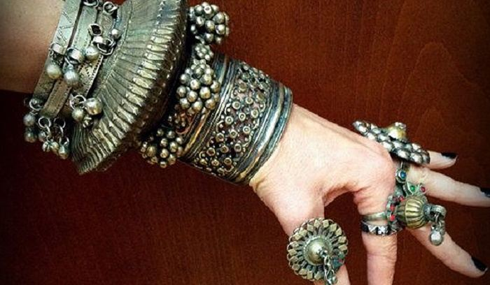Tribal jewelry in India is quite rich. Each tribe has kept its unique style of jewelry intact even now. The original format of jewelry design has been preserved by ethnic tribal. Jewelry that is made of bone, wood, clay, shells and crude metal, by tribals, is not only attractive, but also holds a distinct rustic charm.